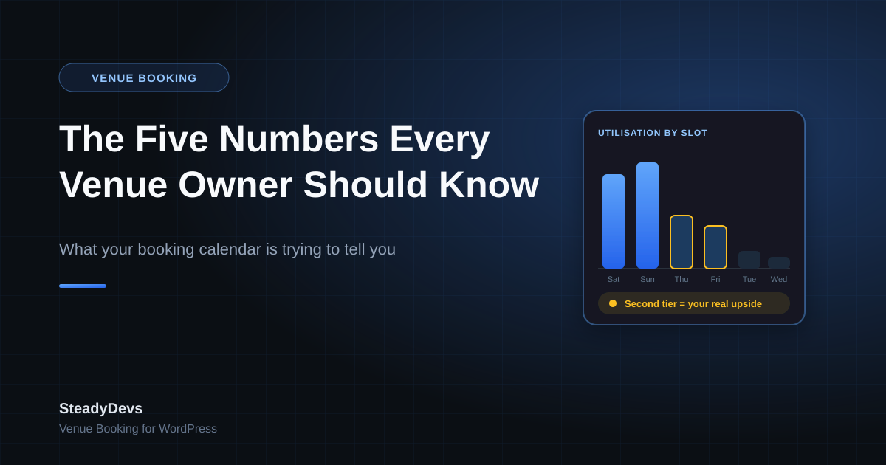

The Five Numbers Every Venue Owner Should Know (And Most Don't)
Ask most venue owners how business is going and you'll get an honest, useful answer: busy on weekends, quiet on weekday afternoons, better than last year. That instinct is built from years of standing in the room, and it's usually right in direction.
What it can't tell you is size. Which quiet hours are genuinely unsellable versus simply unpromoted. Whether your regulars account for a quarter of revenue or two-thirds. Whether that discount you've been running actually filled anything. Those answers need numbers, and the numbers only exist if bookings are recorded somewhere that can be counted.
Here are the five worth having—and what each one changes about how you run the place.
1. Utilisation Rate (By Slot, Not Overall)
The share of your available hours that are actually booked. Overall utilisation is a vanity number; utilisation broken down by day and time is a decision-making number.
Nearly every venue finds the same shape once they look: peak hours near capacity, a clear second tier that's half-full, and a long tail of hours that barely move. The second tier is where the money is—those slots already attract some demand, so a small nudge in price or promotion can fill them. The dead tail usually needs a different use entirely: classes, leagues, corporate blocks, or simply accepting that the space is closed.
- Calculate it per resource (court, room, bay, table), not just for the venue as a whole.
- Split weekday from weekend—averaging them together hides both problems.
- Look at it monthly to catch seasonality before it surprises you.
2. Revenue Per Available Hour
Total revenue divided by total available hours, rather than by hours booked. This is the number that stops a common mistake: discounting peak slots that would have sold anyway.
A discount that fills an empty Tuesday afternoon adds revenue. The same discount applied to a Saturday evening that was going to sell at full price subtracts it. Revenue per available hour catches both effects, where a simple booking count can't.
Track this before and after any promotion. If bookings went up but revenue per available hour went down, the promotion moved customers from full-price slots into discounted ones rather than attracting new demand.
3. Repeat Customer Share
What proportion of your bookings come from customers who have booked before. For most venue businesses this number is high—and the fact that it's high is the most important strategic input you have.
If 70% of your revenue comes from repeat customers, then a loyalty habit, a reliable booking experience and remembering people's preferences are worth far more than another round of ads. If it's low, you have a retention problem that no amount of new traffic will fix—you're refilling a leaking bucket.
You can't calculate this at all unless bookings are tied to a customer record. This is the single strongest argument for getting bookings out of a notebook.
4. No-Show and Late-Cancellation Rate
The share of confirmed bookings that never happened, split between people who cancelled too late to resell and people who simply didn't appear.
The split matters. A high late-cancellation rate is a policy problem—your cancellation window may be too generous, or too hard to use. A high no-show rate is a commitment problem, usually solved by deposits and reminders. Lumping them together sends you after the wrong fix.
As with utilisation, look at it by slot. No-shows concentrate at peak times, where they hurt most.
5. Booking Lead Time
How far ahead people book, typically as a median. This quietly drives several decisions:
- How far ahead to open your calendar. If most bookings come in three days ahead, a six-month booking window adds risk without adding revenue.
- When to promote. Marketing a Saturday slot on Saturday morning is too late if your customers decide on Thursday.
- How aggressive to be with deposits. Long lead times mean more forgetting and more speculative holds—exactly where deposits and reminders pay off.
- When to release unsold inventory. If nothing books beyond four days out, a slot still empty at that point is the one to discount.
Why These Are Hard Without a System
Every number above needs the same underlying thing: each booking recorded as structured data—which resource, which slot, which customer, what happened. A WhatsApp thread has all the information and none of the structure. A paper diary shows you today but can't be counted across a quarter.
This is the less obvious benefit of moving bookings online. Owners usually adopt a booking system to stop double bookings and cut admin time, which it does. The part they notice six months later is that they can finally answer questions about their own business that used to be guesswork.
Turn Your Bookings Into Numbers You Can Use
SteadyDevs Venue Booking records every booking against a customer and a resource on your existing WordPress site—so the reporting is there when you want it. Try it free for 14 days, no credit card required.
Start Your Free TrialStart With One
You don't need a dashboard. Pick utilisation by slot, work it out for last month, and look at where your second-tier hours are. That single view tends to change something in the first week—a price, an opening hour, a promotion aimed at a specific afternoon.
Add the others once the first one has proved useful. Numbers you actually act on beat a full reporting suite nobody opens.
Frequently Asked Questions
It varies too much by venue type and location for a single benchmark to be meaningful. The useful comparison is your own venue over time, and your peak slots against your second-tier slots—that gap is where your realistic upside sits.
Not strictly—a disciplined spreadsheet can produce them. The catch is that it relies on someone entering every booking consistently, including cancellations and no-shows, which is exactly the discipline that slips during busy periods.
Utilisation by slot. It's the easiest to calculate, and it usually points straight at a specific decision—which hours to promote, which to reprice, and which to stop worrying about.
One month tells you something; three months tells you something reliable, because it smooths out weather, holidays and one-off events. Start recording now rather than waiting for a clean starting point.
The smaller the venue, the more a single unsold peak slot matters as a share of revenue. These aren't corporate metrics—they're five numbers you can work out on one page, and they tend to pay for themselves in the first pricing decision they inform.